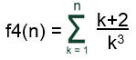

Objetivo:
Que apliques los conocimientos sobre el ciclo WHILE en el
desarrollo de un programa

Forma de
trabajo:
Actividad individual

Instrucciones:
- De manera individual, desarrolla el algoritmo y posteriormente
el programa completo en C para cada uno de los ejercicios que se presentan
a continuación.
- Entrega, vía la plataforma, los archivos *.c que
contengan los programas en C. Es importante que al inicio de cada programa
coloques el o los algoritmos que utilizaste.
Ejercicios
Construye un programa completo en C libre de warnings y errores, que incluya
las siguientes funciones:
- La función f1 que recibe un valor entero mayor
o igual a uno y regresa el resultado de la siguiente sumatoria:
. Por ejemplo:
f1(2) = ( 2(1)
- 1 ) + ( 2(2) - 1 ) = 4
f1(3)
= ( 2(1) - 1 ) + ( 2(2) - 1 ) + ( 2(3) - 1 ) =
9
- La función f2 que recibe un valor entero mayor
o igual a uno y regresa el resultado de la siguiente serie:
f2(N) = 40
- 41 + 42 - 43 ....
Por ejemplo:
f2(2) = 40
- 41 = -1
f2(3) = 40
- 41 + 42 = 41
- La función f3 que recibe un valor entero mayor
o igual a uno y regresa el resultado de la siguiente serie:
f3(N)
= 3 * 6 * 9 *...* 3N
Por ejemplo:
f3(2) = 3(1) * 3(2) = 18
f3(3) = 3(1) * 3(2) * 3(3) = 162
- La función f4 que recibe un valor entero mayor
o igual a uno y regresa el resultado de la siguiente sumatoria:
.
Por ejemplo:

- La función multiplicacion que recibe dos números enteros positivos num1
y num2 y calcula la multiplicación de num1 por num2 utilizando
el ciclo while y la operación suma.
Por ejemplo:
Por ejemplo:
num1 num2
5 -
3 = 2
2
¿Cuántas restas se hicieron hasta que
num1 fue menor que num2? 1
- Utiliza el estatuto
de control switch en la sección
del main y construye un
menú que muestre las diferentes funciones que se ofrecen al usuario
(las construidas anteriormente).
Series y
sumatorias:
A. f1
B. f2
C. f3
D. f4
E. Multiplicacion
F. Division
S. Salir
Pulse la opción deseada:
- En cada
caso del switch se debe llamar a la función correspondiente.
Si se selecciona la opción S (Salir), el programa deberá
terminar su ejecución.
- Recuerda que la captura
de datos y validación de valores debe ser realizada en la sección
del main( ), pues las funciones no pueden realizar las tareas de validación,
captura de datos o impresión de mensajes. Antes de utilizar una
función se debe validar que el valor de entrada cumpla con las condiciones
de dicha función.
- Incluye el algoritmo como comentario al inicio del programa.
- Guarda el archivo con el nombre: P_Matricula.c.

Forma de
entrega:
- Envía tu tarea por blackboard, no se aceptarán
tareas por ningún otro medio.
- Envía solo tus archivos *.c.
- Las tareas enviadas posteriormente a la fecha límite NO
SERÁN CALIFICADAS.
.
INSTRUCCIONES PARA ENVIAR TU TAREA
POR BLACKBOARD
- Haz clic en la actividad de Entrega de Tarea.
- Escribe comentarios si lo consideras necesario.
- Da clic en el botón de Browse My Computer y localiza
el archivo *.c. Si necesitas agregar más archivos repite este
proceso hasta agregar todos tus archivos.
- Haz clic en Submit.
- Al indicar que ha subido exitosamente hacer clic en OK.
. |